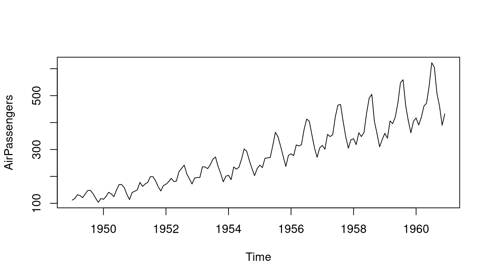

2+2 # addition[1] 42*2 # multiplication[1] 42/2[1] 12-2[1] 02^3 # exponentiate[1] 8Let’s start the tutorial with a (very) short glossary:
> sign at the beginning..R. For instance, yourfilename.R.getwd(), you get the location of your current working directory, and setwd() allows you to set a new location for it.ls() shows all elements in our current workspace, and rm(list=ls()) deletes all elements in our current workspace.A good idea is to use a script file like myscipt.R to store your R commands. You can send single lines or marked areas of your R code to the console by pressing the CTRL+RETURN (STRG+ENTER) keys.
To start with baby steps, we do some simple calculations:
2+2 # addition[1] 42*2 # multiplication[1] 42/2[1] 12-2[1] 02^3 # exponentiate[1] 8Note: Anything written after the # sign will be ignored by R, which is very useful for commenting on your code.
The assignment operator <- will be your most often-used tool. Here is an example of creating a scalar variable:
x <- 4
x[1] 44 -> x # possible but unusual
x[1] 4x = 4
x[1] 4Note: The R community loves the <- assignment operator. Alternatively, you can use the = operator.
And now a more interesting object - a vector:
y = c(2,7,4,1)
y[1] 2 7 4 1The command ls() shows the total content of your current workspace, and the command rm(list=ls()) deletes all elements of your current workspace:
Note: RStudio’s Environment pane also lists all the elements in your current workspace. That is, the command ls() becomes a bit obsolete when working with RStudio.
Let’s try how we can compute with vectors and scalars in R.
x = 4
y = c(2,7,4,1)
x*y # each element in the vector y is multiplied by the scalar x[1] 8 28 16 4y*y # a term-by-term product of the elements in y[1] 4 49 16 1The term-by-term execution, as in the above example, y*y, is a main strength of R. We can conduct many operations vector-wisely:
y^2[1] 4 49 16 1log(y)[1] 0.6931472 1.9459101 1.3862944 0.0000000exp(y)[1] 7.389056 1096.633158 54.598150 2.718282y-mean(y)[1] -1.5 3.5 0.5 -2.5[1] -0.5669467 1.3228757 0.1889822 -0.9449112Element-wise operations are a central characteristic of matrix-based languages like R (or Matlab). Other programming languages often have to use loops instead:
The for()-loop is the most common loop, but there is also a while()-loop and a repeat()-loop. However, loops in R can be relatively slow. Therefore, try to avoid them!
Useful commands to produce sequences of numbers:
The []-operator selects elements of vectors:
y[c(2,4)][1] 7 1Element selections can be made on a more logical basis, too. For example, if you want only the elements of the vector y that are strictly greater than 2:
y[y>2][1] 7 4# Note that this gives you a boolean vector:
y>2[1] FALSE TRUE TRUE FALSENote: Logical operations return so-called boolean objects, i.e., a TRUE or a FALSE. For instance, if we ask R whether 1>2, we get the answer FALSE.
Besides the classical data objects like scalars and vectors, there are many other objects in R:
A matrix is a rectangular array of numbers.
mymatrix = matrix(data=1:16, nrow=4, ncol=4)
mymatrix [,1] [,2] [,3] [,4]
[1,] 1 5 9 13
[2,] 2 6 10 14
[3,] 3 7 11 15
[4,] 4 8 12 16Matrices are extremely useful for theoretically analyzing statistical methods and implementing them practically.
To refresh your matrix algebra skills with implementations in R, check out my Crash Course on Matrix Algebra in R.
In lists, you can organize different kinds of data. E.g., consider the following example:
A very useful function to find specific values and entries within lists is the str()-function:
str(mylist)List of 3
$ Some_Numbers: num [1:8] 66 76 55 12 4 66 8 99
$ Animals : chr [1:3] "Rabbit" "Cat" "Elefant"
$ My_Series : int [1:30] 30 29 28 27 26 25 24 23 22 21 ...A data.frame is a list object with more formal restrictions (e.g., an equal number of rows for all columns). As indicated by its name, a data.frame object is designed to store data:
mydataframe = data.frame(
"Credit_Default" = c( 0, 0, 1, 0, 1, 1),
"Age" = c(35,41,55,36,44,26),
"Loan_in_1000_EUR" = c(55,65,23,12,98,76)
) The data() command lists all sample data sets available in R. Let us have a look at the dataset mtcars. It is a dara.frame object and contains data on several aspects of 32 automobiles from 1974.
mtcars mpg cyl disp hp drat wt qsec vs am gear carb
Mazda RX4 21.0 6 160.0 110 3.90 2.620 16.46 0 1 4 4
Mazda RX4 Wag 21.0 6 160.0 110 3.90 2.875 17.02 0 1 4 4
Datsun 710 22.8 4 108.0 93 3.85 2.320 18.61 1 1 4 1
Hornet 4 Drive 21.4 6 258.0 110 3.08 3.215 19.44 1 0 3 1
Hornet Sportabout 18.7 8 360.0 175 3.15 3.440 17.02 0 0 3 2
Valiant 18.1 6 225.0 105 2.76 3.460 20.22 1 0 3 1
Duster 360 14.3 8 360.0 245 3.21 3.570 15.84 0 0 3 4
Merc 240D 24.4 4 146.7 62 3.69 3.190 20.00 1 0 4 2
Merc 230 22.8 4 140.8 95 3.92 3.150 22.90 1 0 4 2
Merc 280 19.2 6 167.6 123 3.92 3.440 18.30 1 0 4 4
Merc 280C 17.8 6 167.6 123 3.92 3.440 18.90 1 0 4 4
Merc 450SE 16.4 8 275.8 180 3.07 4.070 17.40 0 0 3 3
Merc 450SL 17.3 8 275.8 180 3.07 3.730 17.60 0 0 3 3
Merc 450SLC 15.2 8 275.8 180 3.07 3.780 18.00 0 0 3 3
Cadillac Fleetwood 10.4 8 472.0 205 2.93 5.250 17.98 0 0 3 4
Lincoln Continental 10.4 8 460.0 215 3.00 5.424 17.82 0 0 3 4
Chrysler Imperial 14.7 8 440.0 230 3.23 5.345 17.42 0 0 3 4
Fiat 128 32.4 4 78.7 66 4.08 2.200 19.47 1 1 4 1
Honda Civic 30.4 4 75.7 52 4.93 1.615 18.52 1 1 4 2
Toyota Corolla 33.9 4 71.1 65 4.22 1.835 19.90 1 1 4 1
Toyota Corona 21.5 4 120.1 97 3.70 2.465 20.01 1 0 3 1
Dodge Challenger 15.5 8 318.0 150 2.76 3.520 16.87 0 0 3 2
AMC Javelin 15.2 8 304.0 150 3.15 3.435 17.30 0 0 3 2
Camaro Z28 13.3 8 350.0 245 3.73 3.840 15.41 0 0 3 4
Pontiac Firebird 19.2 8 400.0 175 3.08 3.845 17.05 0 0 3 2
Fiat X1-9 27.3 4 79.0 66 4.08 1.935 18.90 1 1 4 1
Porsche 914-2 26.0 4 120.3 91 4.43 2.140 16.70 0 1 5 2
Lotus Europa 30.4 4 95.1 113 3.77 1.513 16.90 1 1 5 2
Ford Pantera L 15.8 8 351.0 264 4.22 3.170 14.50 0 1 5 4
Ferrari Dino 19.7 6 145.0 175 3.62 2.770 15.50 0 1 5 6
Maserati Bora 15.0 8 301.0 335 3.54 3.570 14.60 0 1 5 8
Volvo 142E 21.4 4 121.0 109 4.11 2.780 18.60 1 1 4 2With the function subset we can select variables and subsets of a dataframe. Let’s create a scatterplot of the variables mpg (miles per gallon) and wt weight (in 1000 lbs).
A data.frame is also useful in a time series context. Since time series data typically include a calendar date for each observation, the observation and date can be stored together as a data.frame. R provides the class Date for calendar dates, which can be generated with the function as.Date().
[1] "Date"myseries = c(16,17,18,16,15,19)
mydates = seq.Date(as.Date("2021-04-01"), by=1, length.out = 6)
mytimeseries = data.frame(mydates, myseries)
mytimeseries mydates myseries
1 2021-04-01 16
2 2021-04-02 17
3 2021-04-03 18
4 2021-04-04 16
5 2021-04-05 15
6 2021-04-06 19A ts (time series) object is tailored explicitly to time series with a yearly time basis and an equidistant observation horizon, such as annual, quarterly, and monthly data. It assigns a specific year/quarter/month to each vector entry.
Qtr1 Qtr2 Qtr3 Qtr4
2020 66 76 55 12
2021 4 66 8 99anothertimeseries = ts(1:50, start = 2015, frequency = 12)
anothertimeseries Jan Feb Mar Apr May Jun Jul Aug Sep Oct Nov Dec
2015 1 2 3 4 5 6 7 8 9 10 11 12
2016 13 14 15 16 17 18 19 20 21 22 23 24
2017 25 26 27 28 29 30 31 32 33 34 35 36
2018 37 38 39 40 41 42 43 44 45 46 47 48
2019 49 50 # The window() command selects the time series observations for a given subperiod
window(anothertimeseries, start=2015.5, end=2017.5) Jan Feb Mar Apr May Jun Jul Aug Sep Oct Nov Dec
2015 7 8 9 10 11 12
2016 13 14 15 16 17 18 19 20 21 22 23 24
2017 25 26 27 28 29 30 31 The data() command lists all sample data sets available in R. Let us have a look at the dataset AirPassengers. It is a ts object and contains data on monthly totals of international airline passengers from 1949 to 1960.
data() # lists all datasets currently loaded in the R environment
?AirPassengers # get more information about the dataset
AirPassengers Jan Feb Mar Apr May Jun Jul Aug Sep Oct Nov Dec
1949 112 118 132 129 121 135 148 148 136 119 104 118
1950 115 126 141 135 125 149 170 170 158 133 114 140
1951 145 150 178 163 172 178 199 199 184 162 146 166
1952 171 180 193 181 183 218 230 242 209 191 172 194
1953 196 196 236 235 229 243 264 272 237 211 180 201
1954 204 188 235 227 234 264 302 293 259 229 203 229
1955 242 233 267 269 270 315 364 347 312 274 237 278
1956 284 277 317 313 318 374 413 405 355 306 271 306
1957 315 301 356 348 355 422 465 467 404 347 305 336
1958 340 318 362 348 363 435 491 505 404 359 310 337
1959 360 342 406 396 420 472 548 559 463 407 362 405
1960 417 391 419 461 472 535 622 606 508 461 390 432class(AirPassengers) # AirPassengers is a ts object[1] "ts"plot(AirPassengers)